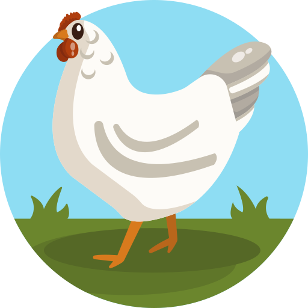
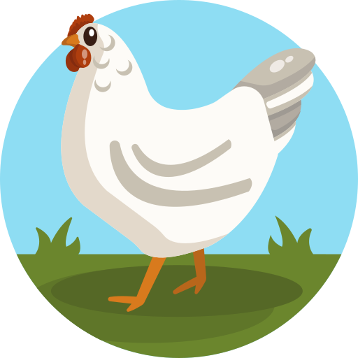

I'm Igwe
a programmer


I am a web developer.Welcome to the Chicken Zone , a SAFE SPACE to chicken out

Computing graduate in web security and technology. Since writing first my hello world , i fell in love with coding and have never looked back.

A safe space to chicken out. with so much noise we always need a quiet space to chicken-out. My chicken-space is when and where i play my bass guitar.Yes one of my best skill is actually playing the bass guitar.
To all instrumentalist and bass heads,get in touch lets talk and code bass.
CONTACT ME